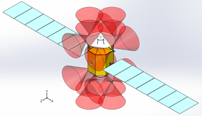

Systems Engineering
Managing Requirements and Constraints
Pictured: A render of PEANUT in its Mars science orbit.
Pictured: A render of PEANUT in its Mars science orbit.
Rarely is an engineering challenge solved through a single mechanism or circuit. Most vehicles require a number of structures, mechanisms, circuit boards, and firmware to meet the project requirements. With so many variables, it is imperative to closely track and manage constraints like mass and cost. These skills have been invaluble on many of my projects such as USLI and MQP.
Beyond what I've written about in other pages, my holistic skill set is advantageous in systems engineering. Most engineering projects require the application of mechanical, electrical, and software design, all of which I have experience in. This is useful in understanding the needs and capabilities of each discipline as well as how they come together to form a complete system.
Spacecraft and Mission Design (SMAD) is one of the final courses taken by astronautical engineers at WPI and it pulls together and builds upon many other courses. It is most notable though, for the term project where student teams design a spacecraft to complete a set mission. Systems engineering is critical to manage the numerous subsystems while keeping mass low.

An artistic render showing PEANUT in its Phobos trailing orbit.
The mission we had to design had to fly to Mars and capture into a 500 km circular orbit. After a brief 30 sol science period, the spacecraft would then maneuver into a Phobos trailing orbit where it would spend the rest of its mission in a 670 sol science period. The primary payload was the HiRISE camera which our craft would use to image Mars and Phobos. Aside from the payload and a couple set components like the high and low gain antennas, the team had to select what we would use for other subsystems. This required a number of trade studies to compare technologies for components like the propulsion and power systems.
To ensure the ACS thruster plumes (shown as red cones) didn't impinge on any components, we placed the thrusters on carefully placed booms.
Me and my three teammates designed PEANUT to accomplish the mission. We opted for electric propulsion, specifically the NEXT-C ion engine, to minimize our mass at the expense of a longer overall mission lifetime. We also used electric propulsion, in this case pulsed plasma thrusters, for our attitude control system in addition to a reaction wheel to ensure we met our requirements for maximum slew time. As a team, we made many similar decisions for aspects like battery and solar panel technology as well as thruster placement and launch vehicle in order to balance the many performance parameters of the system.
I contributed to the team by doing all of the 3D modeling for the spacecraft in Solidworks. This was important to ensuring all of our subsystems would actually fit within the vehicle and that the whole thing would fit into the Falcon-9. This was also used to estimate the vehicle's moment of inertia which was important for designing the ACS. I also did the maneuver planing. The initial analysis made the assumption that the manuevers were impulsive which gave a good baseline for what we could expect for the required Delta V for the mission. After we decided on electric propulsion, I had to update the mission plan to use low-thrust, rather than impulsive, manuevers. The mission plan allowed us to determine fuel tank sizes as well as our total mission lifetime and thruster on time to ensure all our systems had rated lifetimes longer than that.

A picture of PEANUT sitting within the payload volume of the Falcon 9's fairing.
In the end, the mission was a success. We met all the project requirements. The vehicle was light enough that it could be launched directly into a Hohmann transfer orbit to Mars by the Falcon 9 in its ASDS landing configuration which allows for significant cost savings compared with the Atlas V (511 configuration), our second choice.